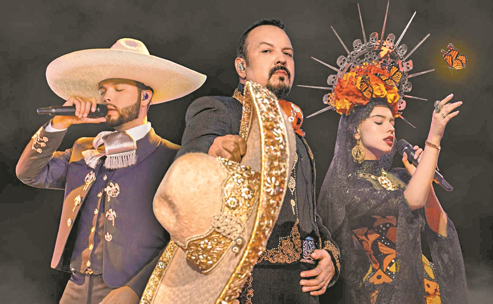
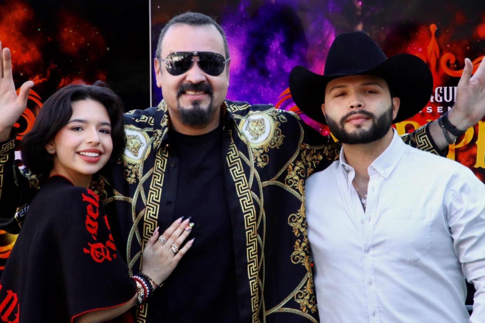

ABOUT
Pepe Aguilar was born into a musical family. His father, Antonio
Aguilar, was an iconic regional Mexican singer who sold over 25 million
records and is credited with being one of the pioneers in bringing
charro and mariachi culture to international audiences. His mother, Flor
Silvestre, was also an iconic regional Mexican singer and was one of the
leading ladies in what is considered the golden era of Mexican cinema.
He is the nephew of singers La Prieta Linda and Mary Jiménez, his
mother’s younger sisters. He has four siblings: Antonio Aguilar Jr.,
Dalia Inés, Francisco Rubiales, and Marcela Rubiales. He married Aneliz
Álvarez Alcalá, who at one point was kidnapped along with his brother
and held for ransom. He has four children with Leonardo Aguilar and
Ángela Aguilar also being singers.
Pepe Aguilar was born into a musical family. His father, Antonio
Aguilar, was an iconic regional Mexican singer who sold over 25 million
records and is credited with being one of the pioneers in bringing
charro and mariachi culture to international audiences. His mother, Flor
Silvestre, was also an iconic regional Mexican singer and was one of the
leading ladies in what is considered the golden era of Mexican
cinema.[12] He is the nephew of singers La Prieta Linda and Mary
Jiménez, his mother's younger sisters. He has four siblings: Antonio
Aguilar Jr., Dalia Inés, Francisco Rubiales, and Marcela Rubiales. He
married Aneliz Álvarez Alcalá, who at one point was kidnapped along with
his brother and held for ransom.[13] He has four children with Leonardo
Aguilar and Ángela Aguilar also being singers.
Like a businessman and artist who is independent, he has his own record
label (Equinoccio Records) and studio with the highest technology in
Latin America. He has also gone to the movement of fashion. In 2009 he
took out his own fashion line called "Pepe Aguilar Línea de Calzado,"
which debuted for men and women. To celebrate this and share yet another
aspect of his life with his fans, he launched his "Pepe Aguilar
Signature Collection" through WSS Warehouse Shoe Sale retailer in the
United States. In addition, his dream of helping Mexico in some way has
given way to an eco-friendly agricultural project in which Aguilar will
strengthen and promote the organic production of crops in communities in
Zacatecas, using traditional practices and technology that will have a
positive impact on the environment.

